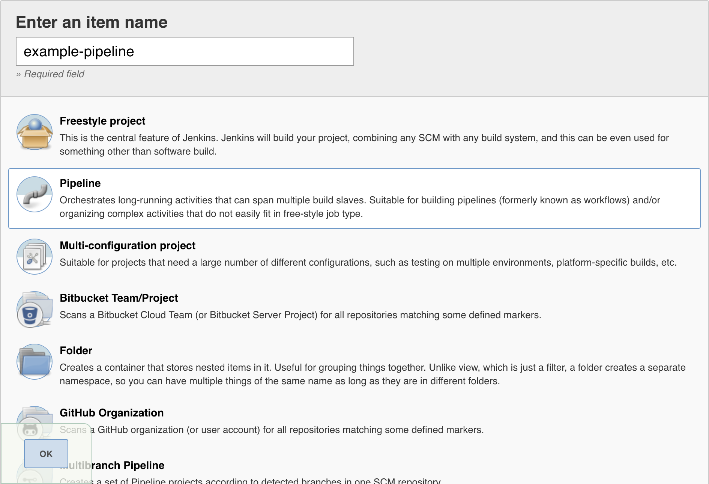
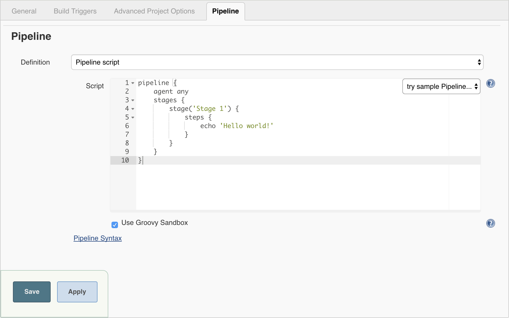
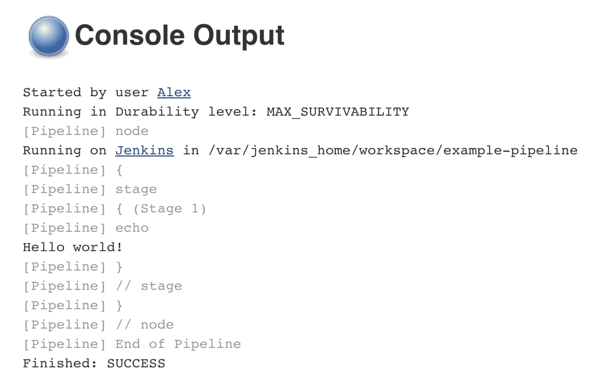

pipeline {
agent any (1)
stages {
stage('Stage 1') {
steps {
echo 'Hello world!' (2)
}
}
}
}流水线入门
正如 previously提到的, Jenkins流水线是一套插件，它支持实现和集成持续交付流水线到 Jenkins。流水线提供了一组可扩展的工具，用于通过流水线 DSL将简单到复杂的交付流水线建模为 "代码"。 [1]
本节描述了如何在Jenkins中开始创建你的流水线并介绍创建和存储 Jenkinsfile 的各种方式。
配置要求
T为了使用Jenkins流水线, 你需要:
-
Jenkins 2.x或以上版本(旧版本回到 1.642.3 可能有用，但不建议)
-
流水线插件, [2]作为"建议插件" 的一部分安装(在 安装 Jenkins后在运行 Post-installation setup wizard时指定)。
在 Managing Plugins中阅读了解更多与安装和管理插件有关的信息。
定义流水线
声明式和脚本化的流水线 都是 DSLs [1] 来描述软件交付流水线的一部分。 脚本化的流水线是用一种限制形式的 Groovy 语法编写的。
Groovy 语法的相关组件在整个文档中都需要介绍, 所以虽然理解Groovy是有用的, 但不需要使用流水线。 流水线可以通过以下任一方式来创建:
-
[through-blue-ocean] - 在 Blue Ocean中设置一个流水线项目后, Blue Ocean UI 会帮你编写流水线的`Jenkinsfile`文件并提交到源代码控制。
-
[through-the-classic-ui] - 你可以通过经典 UI直接在Jenkins中输入基本流水线。
使用两种方式定义流水线的语法是相同的, 但是 虽然 Jenkins 支持直接进入经典 UI, 但通常认为最好的方式是在`Jenkinsfile`文件中定义流水线， Jenkins 在之后会直接从源代码控制加载。
通过 Blue Ocean
如果你是Jenkins 流水线的新人, Blue Ocean UI 帮助你
设置流水线项目, 并通过图形化流水线编辑器自动创建和编写 (即 Jenkinsfile)。
作为在Blue Ocean中设置流水线项目的一部分, Jenkins 给你项目的源代码控制仓库配置了一个安全的、经过身份验证的适当的连接因此,你通过Blue Ocean的流水线编辑器在 `Jenkinsfile`中做的任何更改都会自动的保存并提交到源代码控制。 了解更多 Blue Ocean 相关信息请前往 Blue Ocean 章节和 Getting started with Blue Ocean 页面。
通过经典UI
使用经典 UI创建的`Jenkinsfile`被Jenkins自己保存 (在Jenkins的主目录下)。
通过Jenkins经典UI创建一个基本流水线:
-
I如果需要的话, 确保你已登录进 Jenkins。
-
从Jenkins 主页 (即Jenkins经典 UI 的仪表盘)，点击左上的 New Item。

-
在 Enter an item name 域, 填写你新建的流水线项目的名称。
Caution: Jenkins 使用这个项目名称在磁盘上创建目录。建议不要在项目名称中使用空格, 因为这样做可能会发现在脚本中不能正确处理目录路径中的空格的bug。 -
向下滚动并点击*Pipeline*, 然后点击页面底部的 OK 打开流水线配置页( General 选项已被选)。
Pipeline and then click OK" width="100%">
-
点击页面顶部的 Pipeline 选项卡向下滚动到 Pipeline 部分。
Note: 如果你在源代码控制中定义Jenkinsfile, 请按照下面的 In SCM 的说明。 -
在*Pipeline* 部分, 确保 Definition 域显示 Pipeline script 选项。
-
将你的流水线代码输入到*Script* 闻不如你区域。
例如, 复制并粘贴下面的声明式示例流水线代码 (在 Jenkinsfile ( … ) 标题下) 或者它的脚本化的版本到 Script 文本区域。 (T下面的声明式示例将在整个过程的其余部分使用)Jenkinsfile (Declarative Pipeline)1 agenti指示 Jenkins 为整个流水线配置一个执行器 (在Jenkins环境下的任何可用的 代理/节点上) 和工作区。2 echo在控制台输出中写入一个简单的字符串。3 node与agent(上面的)做了同样的事情。
Note: 你也可以从 Script*文本区域的右上方的 *try sample Pipeline 选项选择已 Scripted 的流水线示例。注意该区域没有可用的声明式流水线示例。
-
点击 Save 打开流水线项目视图页面。
-
在该页面, 点击左侧的 Build Now 运行流水线。

-
在左侧的 Build History 下面, 点击 #1 来访问这个特定流水线运行的详细信息。
-
点击 Console Output 来查看流水线运行的全部输出。下面的输出显示你的流水线已成功运行。
Console Output for the Pipeline" width="70%">
Notes:
-
你也可以直接从仪表盘上访问控制台输出 通过点击构建号左边的彩色的地球仪(例如 #1)。
-
通过经典的UI定义流水线可以很方便的测试流水线代码片段, 或处理简单的流水线或 不需要从仓库中检出/clone源代码的流水线。 正如上面提到的, 不像通过Blue Ocean (above)或在版本控制中 (below)定义的 ``Jenkinsfile`` , ``Jenkinsfile`` 进入流水线项目的 Script 文本区域， 被Jenkins自己存储在Jenkins主目录下。因此, 为了更大的控制和灵活性o, 特别是对于那些可能获得复杂性源代码控制项目 , 建议使用 Blue Ocean 或 source control 来定义你的
Jenkinsfile文件。
-
在 SCM中
复杂的流水线很难在流水线配置页面的 classic UI’s Script 文本区域进行编写和维护。
为了更简单些, 流水线的 Jenkinsfile 可以在文本编辑器中或集成开发环境(IDE) 进行编写并提交到源代码控制 [3] (选择性的使用Jenkins构建的应用程序代码)。然后Jenkins从源代码控制中 检出`Jenkinsfile` 文件作为流水线项目构建过程的一部分并接着执行你的流水线。
使用来自源代码控制的 Jenkinsfile 文件配置流水线项目:
-
按照 通过经典 UI上面的步骤定义你的流水线直到第5步 (在流水线配置页面访问 Pipeline 部分)。
-
从 Definition 字段, 选择 Pipeline script from SCM 选项。
-
从 SCM 字段, 选择包含`Jenkinsfile`文件的仓库的源代码控制系统的类型 。
-
完成特定于存储库的源代码控制系统得字段。
Tip: 如果你不确定给定字段的指定值，点击它的 ? 图标 获取更多信息。 -
在 Script Path 字段, 指定你的`Jenkinsfile`文件的位置 (和名称) 。
-
这个位置是Jenkins 检出/clone 包括`Jenkinsfile`文件的仓库得位置, 它应该与 r仓库的文件结构匹配。该字段的默认值假设你的
Jenkinsfile文件名称为 "Jenkinsfile" 并位于存储库的根目录下。
当你更新指定的仓库时, 只要流水线配置了SCM轮询触发器,就会触发一个新的构建。
内置文档
拥有内置文档特性的流水线船可以更容易地创建各种复杂的流水线。该内置文档是基于Jenkins实例中插件的安装自动生成和更新的。
该内置文档可以被全局地找到: localhost:8080/pipeline-syntax/, 假设你有一个Jenkins示例运行在本地的8080端口。对于任何已配置的流水线项目，同样的文档也被链接到侧栏的 Pipeline Syntax 。
代码生成器
内置的实用的 "Snippet Generator" 有助于为各个步骤创建代码段, 发现插件提供的新步骤, 或者为特定的步骤尝试不同的参数。
代码生成器动态地填充了Jenkins实例的可用的步骤列表。 可用的步骤数量依赖于安装的插件，这些插件显式地公开了流水线中使用的步骤。
使用代码生成器生成一个步骤片段:
-
从已配置好的流水线, 或 localhost:8080/pipeline-syntax导航到 Pipeline Syntax 链接 (从上面引用)
-
在*Sample Step*下拉菜单中选择需要的步骤。
-
使用*Sample Step*下拉菜单的动态填充区来配置已选的步骤。
-
点击 *Generate Pipeline Script*生成一个能够被复制并粘贴到流水线中的流水线片段。

要访问所选步骤的附加信息和/或文档,请点击帮助图标(由上图中的红色箭头表示)。
延伸阅读
本节仅仅介绍了Jenkins流水线可以做的事情的皮毛, 但是应该为你开始测试Jenkins 实例提供了足够的基础。
在下一节中, The Jenkinsfile,会讨论更多的流水线步骤 以及实现成功的, 真实世界的Jenkins流水线模式。